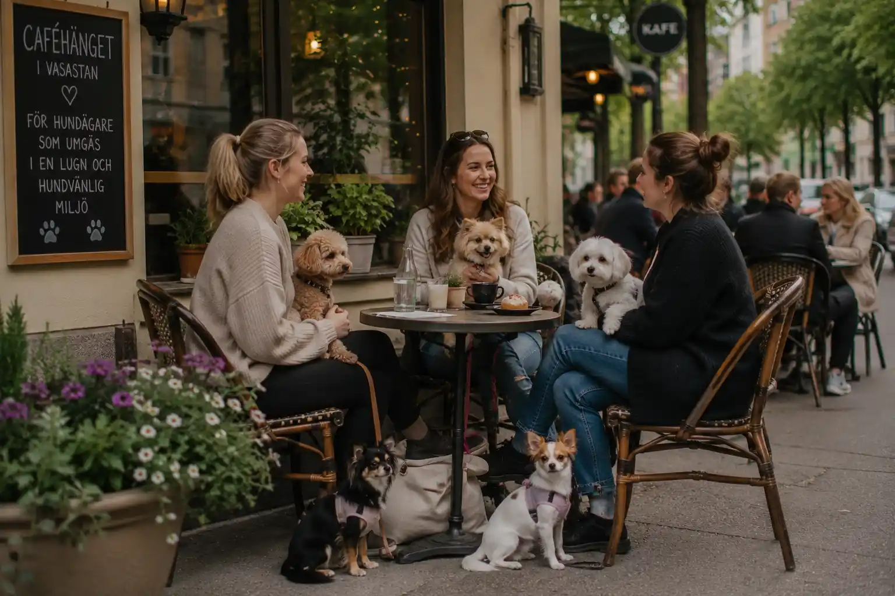

Café
Hundvänligt caféhäng
Träffa andra hundägare på ett hundvänligt café i Vasastan med avslappnad stämning, fika och social gemenskap.

Praktisk information
- Plats
- Vasastan
- Tid
- Torsdagar kl. 18.00
- Längd
- Cirka 90 minuter
- Pris
- Du betalar själv för fika
- Passar för
- Hundägare som vill träffa andra i en lugn och social miljö
Om aktiviteten
Hundvänligt caféhäng passar dig som vill träffa andra hundägare i en avslappnad miljö. Aktiviteten är tänkt som en social träff där både människor och hundar kan känna sig välkomna.
Under träffen finns möjlighet att fika, prata med andra hundägare och dela erfarenheter kring vardagen med hund. Miljön är lugn och enkel att ta sig till, vilket gör aktiviteten till ett bra alternativ för både nya och vana hundägare.
Caféhänget fungerar också som ett sätt för hunden att träna på att vistas i offentliga miljöer på ett tryggt och kontrollerat sätt.
Att tänka på
- Håll hunden nära dig och visa hänsyn till andra gäster.
- Ta gärna med en filt eller liten plats där hunden kan vila.
- Se till att hunden har rastats innan cafébesöket.
- Välj en lugn plats om din hund är ovan vid offentliga miljöer.